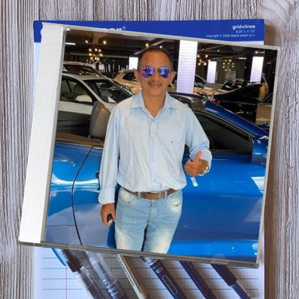

Venha fazer parte dessa jornada musical com os Jabuticabanos!
Quem somos nós?

Lil Blue P.

Lil Blue P. é o álbum de estreia mais inusitado da cena trap, onde todos os padrões foram quebrados ao misturar as batidas pesadas do trap com a voz inconfundível de Manoel Gomes, o criador do viral "Caneta Azul". A proposta ousada une o estilo melódico e arrastado do trap com a cadência simples e cativante que tornou Manoel um fenômeno da internet.
Nas faixas deste álbum, os temas clássicos do trap — dinheiro, sucesso e conquistas — são transformados em algo completamente novo, recitando cada verso com a voz doce e sincera que todos conhecem, mas agora sobre bases pesadas, com graves profundos e sintetizadores atmosféricos. O contraste cria uma sonoridade única, onde o flow minimalista e quase inocente choca com a agressividade das batidas, tornando o álbum uma obra inesperadamente contagiante.
Esse álbum é uma verdadeira viagem para quem ama o inesperado, misturando a vibe introspectiva e sombria do trap com o carisma único do Caneta Azul. Lil Blue P. é um trabalho autêntico e divertido, mostrando que na música tudo é possível — até mesmo a caneta azul encontrar seu lugar no trap.
Músicas:
Mas existe um lugar
Vida Loka, Pt. 1
Os Bico Tão Se Perguntando
Para uma melhor experiência, use fones de ouvido.